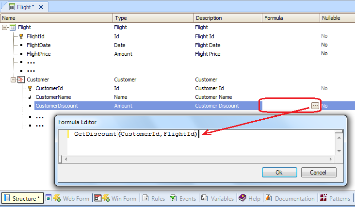

Udp method
Calls a GeneXus object that returns a value.
Syntax
&VariableName|AttributeName =ObjectName.Udp([par1, .... , parN])
Where:
&VariableName
Is the name of a -local and temporary- variable defined in the caller object. It will receive the data returned by the invoked object (ObjectName).
AttributeName
Is a valid attribute name defined in the Knowledge Base. It will receive the data returned by the invoked object (ObjectName).
ObjectName
Is the name of the object you want to invoke.
par1, …, parN
Are optional parameters that can be sent to the called object. They can be attributes, variables, fixed values, or expressions.
Description
In general, the Udp (User Defined Procedure) method is used to call Procedures and Data Providers. When these objects are called, they can return data by returning the control to the caller after their execution. The objects that have UI, in Web environments, don't return the control to the caller.
The Udp method can be written in different sections of the caller object, depending on whether the caller is a Transaction, a Web Panel, a Procedure, etc. If the caller is a Procedure, the Udp method must be included in some line of its source. If the caller object is a Transaction, the invocation can be included in its Rules section as well as inside an event, depending on the requirement, etc. Furthermore, the Udp method can be used in the definition of a formula attribute.
Depending on the context where the invocation is defined, you must decide if it is more appropriate receiving the result in a certain attribute, or in a variable.
The syntax of the Udp method allows you to omit the dot and the Udp, and the invocation will be the same.
Samples
1) In the following example, a Procedure called GetDiscount is called using the Udp method (the dot and the Udp method were omitted because they are optional):
&discount= GetDiscount(CustomerId,FlightId); //Rule defined in a Transaction object Parm(CustomerId,FlightId,&discount); //Rule defined in the GetDiscount Procedure
It is not important to know details of what the GetDiscount procedure performs. Given the name of the Procedure, the fact that it returns a value and the name of the variable that receives the value returned by the Procedure, you can conclude that:
- the Procedure will return a discount
- two pieces of data are sent to the Procedure: a customer identifier and a flight identifier
- the Procedure will use that data and assess and calculate whatever is necessary to return a discount
It is important to observe how the Parm rule is declared in the called object.
In the rules section of the GetDiscount Procedure, the Parm rule is declared with the three parameters.
The term “parameters” refers to data sent and received between two objects, where one object calls the other one. Referring to parameters, you can talk in general, regardless of whether you send or receive variables, attributes or fixed values.
Let’s now see how this works: the two parameters sent, are received in order. And the third parameter defined in the Parm rule, corresponds to the one that its value is calculated (or obtained) in the Procedure and assigned to the &discount variable which is before the equal sign in the invocation.
In this example, the two sent parameters are attributes, because the Procedure is invoked from a Transaction, and so, in that context, the customer identifier value and the flight identifier value are stored in attributes.
2) The only difference that this example presents with the previous example is that the result returned by the Procedure invoked with the Udp method is assigned to an attribute.
&discount= GetDiscount(CustomerId,FlightId); //Rule defined in a Transaction object Parm(CustomerId,FlightId,&discount); //Rule defined in the GetDiscount Procedure
It is important to consider that an attribute can be assigned with a value, only in the rules section of a Transaction or inside a For Each command in a Procedure.
GeneXus offers other possibilities to update the database, but the assignment of values directly to attributes is only allowed only in those cases.
3) In the following example, the same Procedure is invoked in the definition of a formula:

Since the CustomerDiscount attribute has a formula definition, it is a virtual attribute (in other words, the attribute doesn't exist in the database). Its value is calculated every time, by executing the calculation —or in this case by executing the Procedure— specified in the formula definition.
The attributes sent as parameters to the Procedure must have value (more specifically, they must belong to the Extended Table of the table associated to the Transaction level where the formula attribute is present).
In spite of omitting the Udp method, the procedure is executed using it, because an output value is returned by the Procedure, and it is assigned to the formula attribute (the procedure must have its Parm rule defined with three parameters and the last parameter is the one returned and assigned to the formula attribute).
4) In the following example, a Data Provider object is called with the Udp method (although it is omitted) without sending parameters to it:
&FranceCustomers=DataProviderCustomersFromFrance()
The Data Provider loads a variable based on a Structured Data Type which is a collection. After that, the collection can be iterated to process each element, or showed, etc.
Important consideration: Even though the Data Provider is invoked with the Udp method (it is omitted but used, because the object returns data), the Data Provider hasn't got a Parm rule defined because no parameters are sent to it (so, it doesn't receive parameters), and with respect to the returned data, the Data Providers have a property called Output to set in it, the data type of the data that returns.
See Also
Videos

| Backlinks | ||
| Call method | Data Provider: Input | Definition of type of parameters received (in, out, inout) |
| For in Command | New command | Parm rule |